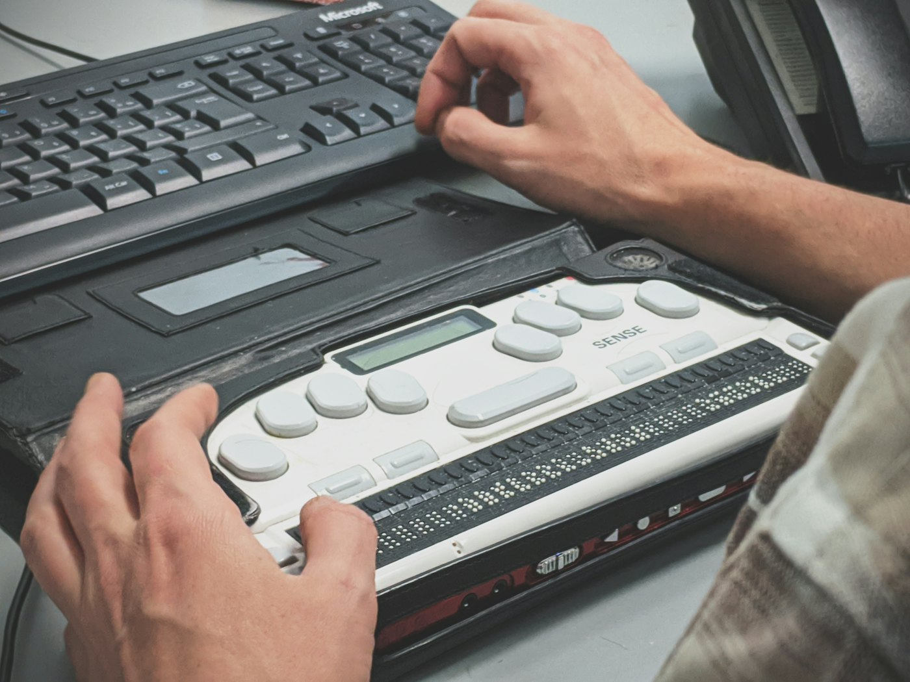

함께 만드는 사람들
쓰실 분들의 이야기에서 시작했어요
2026년 7~8월, 시각장애인 24명이 설문에 답해 주셨고 그중 11명과는 전화로 깊이 이야기를 나눴어요. 무엇을 늘 켜 두고 무엇을 끌 수 있게 할지도 이 이야기를 바탕으로 정했어요.


앞으로 이렇게 이어 가요
- 2026년 11월
시제품 테스트에 동의해 주신 시각장애인 10명과 직접 써 보며 이해도와 불편한 점을 확인해요. 국내 특허도 출원할 예정이에요.
- 2026년 11~12월
세종대학교·경희대학교 장애학생지원센터와 이야기를 나누고, 녹화 강의에 먼저 적용해 봐요.
- 2027년 상반기
시각장애인 직원이 있는 회사와 공공기관에 시범 도입을 제안해요. 평가에 쓴 데이터와 코드를 공개하고, 시스템 논문도 국제 학술지에 낼 예정이에요.
- 2027년 하반기
Zoom과 Teams에서도 쓸 수 있게 넓혀요. 녹화된 강의와 영상을 미리 분석해 더 자세히 해설하는 버전도 준비해요.
- 만든 팀
- 시온(SEEON, 視溫)
- 대표
- 김지오 · 세종대학교 인공지능학과
- 기획
- 우준영
- 개발
- 이재현
2026년도 인공지능 루키 결선에 오른 프로젝트예요. 연구 인프라 지원으로 받은 GPU 서버에서 만들고 시험했어요.